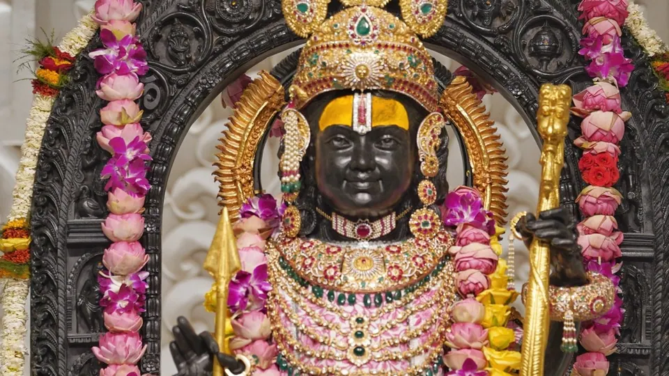

Ram mandir

अयोध्या को भगवान राम का जन्मस्थान माना जाता है, जो इसे हिंदुओं के लिए एक पवित्र स्थल बनाता है।
the biggest temples to be built in India after Independence, the Ayodhya Ram Temple is touted to be a combination of new-age technological conveniences and age-old Indian traditions.
Between 1528 and 1529, the Babri Masjid was built by the Mughal emperor Babur. However, members of the Hindu community also sought possession of the site, claiming it to be the birthplace of Lord Ram. The site subsequently became a disputed site and a long, legal battle ensued. Ending the title dispute on November 9, 2019, the Supreme Court accepted the 2.77 acres of disputed location as the birthplace of Lord Ram, paving the way for the construction of the Ram Mandir.